渾身のねこぱんち [梅吉]
いきなりですが、がんばるおかーさんです(*>艸<)

９日は梅吉の定期診察でした。
（梅吉は高脂血症＝中性脂肪値が高い持病があるので日々飲み薬と定期診察が必要です。
梅吉の高脂血症は生活習慣ではなく体質です。）
あごニキビで受診したのが約２週間前だったのでまだ病院の記憶が生々しかったのでしょうか。

なかなかキャリーに入ってくれません。いつもはあっけないくらいすんなり入るのに！
この後おっともカメラを置いて二人でぎゅっとイン。
ちょっと可哀想に見えるかもしれませんがこういう時はあまり時間をかけずに
勢いで入れてしまった方がお互いダメージが少ないかと思います。

![[猫]](https://blog.ss-blog.jp/_images_e/101.gif) やっぱり ここかいな（ぷんすか）
やっぱり ここかいな（ぷんすか）
今日はちっくんしますよ。がんばってくださいね。

フー！シャー！！言う割には病院スタッフの方におとなしく抱っこされますw
前回の定期診察で一部お薬が変わって約２ヶ月。
その効き目を見るための採血だったのですが結果は良好！
体重は若干増えていましたが中性脂肪値は下がっていました。
＝体重の増えた分は筋肉という事になるので良い兆候と。
このままお薬を続けて体重を現状維持で行きましょう、という事になりました。
あごの状態も見てもらいますよー。
こちらは良くなってはいませんが悪化の様子はないので
「ぽんぽんぽん」の優しい消毒を続けます。

診察の終わり採血後に巻いた包帯を取ってくれたのですが・・・
梅吉さんこれにえらくご立腹![[爆弾]](https://blog.ss-blog.jp/_images_e/154.gif)
私が両手を離した瞬間に先生に向かって渾身のねこぱーーーんちっ！！（ただし、すか〜っ）
こういう場面はさすが先生。場数を踏んでいらっしゃる。
梅吉のパンチもなかなかでしたが先生の身のかわし方の素早かった事(・o・)
獣医は動体視力と反射神経が良くないと出来ない職業かもしれませんねーwww
「梅吉！（当たらなかったけど）すごいパンチだったね！！」と
アホ夫婦は我が子の活躍を褒め讃えながら帰宅したのでした(⌒-⌒;

わしの ぱんちをかわしよった・・・

せんせいは ただもんやないな
病院、お疲れ様でしたね＾＾
次回は３ヶ月後ですよー。
 ↑ガブッと一押し↑
↑ガブッと一押し↑

９日は梅吉の定期診察でした。
（梅吉は高脂血症＝中性脂肪値が高い持病があるので日々飲み薬と定期診察が必要です。
梅吉の高脂血症は生活習慣ではなく体質です。）
あごニキビで受診したのが約２週間前だったのでまだ病院の記憶が生々しかったのでしょうか。

なかなかキャリーに入ってくれません。いつもはあっけないくらいすんなり入るのに！
この後おっともカメラを置いて二人でぎゅっとイン。
ちょっと可哀想に見えるかもしれませんがこういう時はあまり時間をかけずに
勢いで入れてしまった方がお互いダメージが少ないかと思います。

今日はちっくんしますよ。がんばってくださいね。

フー！シャー！！言う割には病院スタッフの方におとなしく抱っこされますw
前回の定期診察で一部お薬が変わって約２ヶ月。
その効き目を見るための採血だったのですが結果は良好！
体重は若干増えていましたが中性脂肪値は下がっていました。
＝体重の増えた分は筋肉という事になるので良い兆候と。
このままお薬を続けて体重を現状維持で行きましょう、という事になりました。
あごの状態も見てもらいますよー。
こちらは良くなってはいませんが悪化の様子はないので
「ぽんぽんぽん」の優しい消毒を続けます。

診察の終わり採血後に巻いた包帯を取ってくれたのですが・・・
梅吉さんこれにえらくご立腹
私が両手を離した瞬間に先生に向かって渾身のねこぱーーーんちっ！！（ただし、すか〜っ）
こういう場面はさすが先生。場数を踏んでいらっしゃる。
梅吉のパンチもなかなかでしたが先生の身のかわし方の素早かった事(・o・)
獣医は動体視力と反射神経が良くないと出来ない職業かもしれませんねーwww
「梅吉！（当たらなかったけど）すごいパンチだったね！！」と
アホ夫婦は我が子の活躍を褒め讃えながら帰宅したのでした(⌒-⌒;


病院、お疲れ様でしたね＾＾
次回は３ヶ月後ですよー。
髪も伸びる季節？ [梅吉]
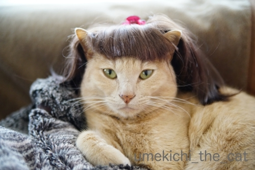
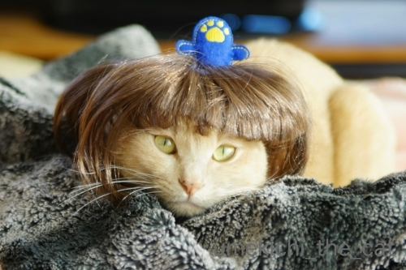
うそやで これは「すりこ」いうみせの おひなさまかつらや
うえにあるんは おだいりさまの かんむりやて
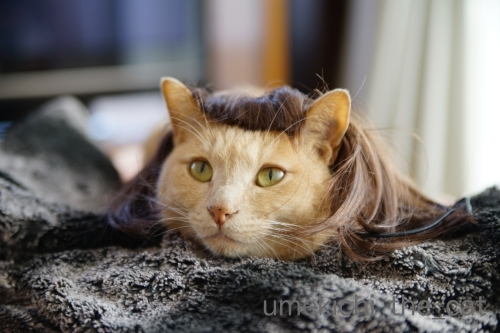


せや！ いまおかーさんのまえがみも こんなんやで
びよーしさんいうひとと こみゅにゅけーしょんがあかんかったて
すち子っぽいてなげいとったわwww

このペット用かつらは3COINSで買いました。御雛様バージョンとお内裏様バージョンがありましたよ。
御雛様のはピンクっぽい髪色だったのでこちらを購入＾＾
猫耳がをうまく出せるように切り込みを入れようと思ったのですが
ハサミを入れると髪の毛がどんどん抜けちゃうような構造なので断念w
前髪の隙間からうまく耳を出して一筋長いのを垂らすと良い感じに(*>艸<)
こんな女の子いますよね。
梅吉のコメントにもありますが、今、私の前髪はかつてないくらいのぱっつんw
すち子さんほど短くはないのですが前髪と横髪の長さの比率がすち子感。
最近美容室を変えたのですがまだ美容師さんとの意思疎通が今ひとつなんですよね。
美容師さんは人当たりも良いし仕上がりも綺麗なので気に入ってはいるんですけど。
好みや似合う似合わないはある程度の期間通わないと把握してもらえないかなぁ。
髪は伸びるからあまり気にしてませんけど

ネタがどんどん溜まっているので今日のZEPETOはお休みします。
（作業も進んでいない・・・）
いつも狙ってる？ [梅吉]

今年のブーケとビールと梅吉 [梅吉]
最近は短時間ですがベランダ活動を楽しんでいる梅吉さん。


これは なんやー！なんなんやーー！！

結婚記念日が近いのでおとーさんが家族みんなにってブーケを買ってくれましたよ＾＾

梅吉さんにも素敵なプレゼントが！
ブーケを縛ってたヒモです！高級品！！

ぶれっぶれだけどイイ表情してます0(≧▽≦)0

立ち上がってねこぱんちの連打w
臨場感をお楽しみください＾＾
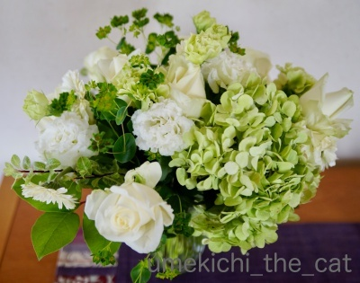
ブーケの全体像です。
この配色大好きなんです(≧▽≦)
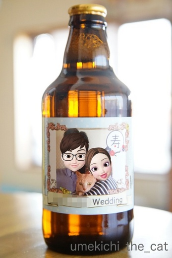
毎年オーダーしているビールはこんなデザインになりました。
ブログアップ用にZEPETOの絵文字を利用して貼り付けてみましたよ。
おっとのアバターは私の顔を男性バージョンにしたものです。
でもなんか似てるんですよねーw
私がちぃママなのはご愛嬌(〃▽〃)
あ、ビールの実物はアバター加工してない普通の写真です＾＾
スキマスキーの遊び方 [梅吉]
お気に入りのおもちゃは
（ビリビリビリー！）
クッションの隙間とか
こういう隙間に挟まっていると楽しさ倍増！
（めりめりめりめりー！！）
自分が隙間に挟まるのも好きだけどおもちゃが挟まってるのも大好物です。

なかなか取れないのが楽しい♪
（バリバリバリバリー！！！）
盛り上がってます。
喜んでくれるのでついついソファを遊び場にしちゃいます。
生地がビリビリ、バリバリ、めりめり音を立ててもいいんです。

梅吉さんが毎日元気に遊んでくれるし爪とぎとしても活用しているので

うちのソファは悲惨なことにー0(≧▽≦)0
ソファは無印のものなんですが専用のカバー類はもう廃盤。
生地を選んでオーダーすれば作ってくれるんですが
新調したってすぐにズタボロになるのは目に見えてます。
皮のソファに買い替えたって同じでしょう。
なんかもういいやーって(⌒-⌒;
糸が長くなっているところを切ってしまうと
次々と糸くずが出てくるのでそのまま放置w
びろんびろんとフリンジ状態ですw
伸縮してフィットするソファカバーもありますが
あの素材も梅吉にとっては爪とぎ以外の何物でもありません。
ボロになりにくい素材のマルチカバーでソファを覆ってまーす(*>艸<)
(本体までボロボロにされるとさすがに困るので
被害を受けやすいところは薄いナイロン生地を貼り付けてあります。）
にゃんこと暮らしていると（猫に対してのみ）
どんどん寛容になっていきますよね(^_－)☆
〜おまけ〜
お散歩コースにあるケーキ屋さんの看板を持つ羊さんの後ろ姿。
通るたびにニヤニヤが止まらん、という話を某所でしていたら
「梅吉くんに似てるんじゃ？」というご指摘。

確かに！豊満な梅吉って感じw
ニヤニヤが止まらない理由がわかりましたー0(≧▽≦)0
起こされるのは気に入らない [梅吉]
おっとは起きてきたのに梅吉が起きてこない。
寝室に様子を見にいくと・・・

心地よさげに毛布にくるまってます。

眠ってはいませんがぬくぬくを楽しんでいる様子。

うちはこういう時はキビシイですよ。
いつまでも片付けが進まないので毛布を剥ぎ取ります。
第一朝早く私を起こして自分だけ寝てるなんてーーーー！！！！(`o´)
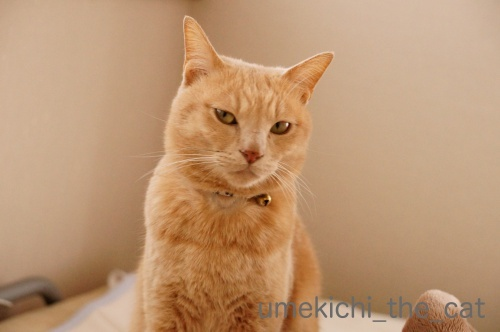
毛布を剥ぎ取られてやさぐれるねこ(*>艸<)
自分が起こされるのは気に入らないですかw
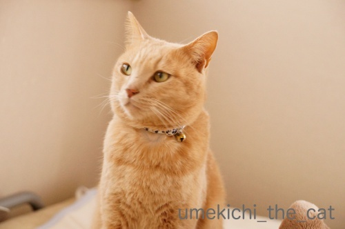
ものすごく面白くなさそうです(≧▽≦)
ぷんすかって言葉がぴったり？

もそもそと目やにをつけたまま（笑）寝室を出て向かったのは
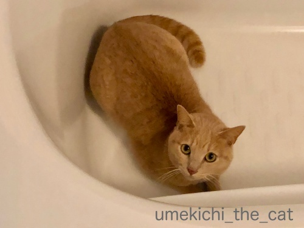
バスタブ。
お目目キラキラで遊ぶ気満々です (=ΦwΦ=)
バスタブに入っているところを物陰からのぞかれたり
のぞいている人間に飛びつくのが楽しくてしょうがないんですよ。
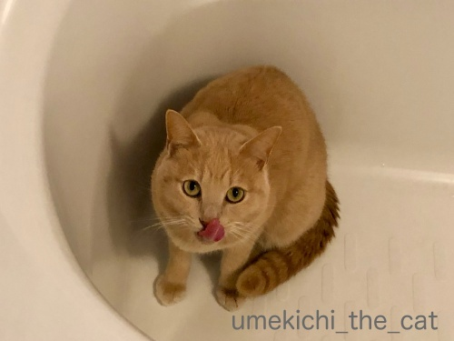
３歩あるいたらご機嫌が直っちゃうところが梅吉の良いところだよねー0(≧▽≦)0
梅吉のあごニキビ。
ニキビの黒いぶつぶつはたくさんあるんですが（毛穴の汚れみたいに見えます）
前回記事のようにかさぶたになってはいません。
消毒もぽんぽんぽんを守って気にしすぎないようにしています。
悪化しちゃう子はあごが腫れ上がる、とも聞きますが
梅吉の場合は今の所大丈夫なようです＾＾
↑ガブッと一押し↑
寝室に様子を見にいくと・・・

心地よさげに毛布にくるまってます。

眠ってはいませんがぬくぬくを楽しんでいる様子。

うちはこういう時はキビシイですよ。
いつまでも片付けが進まないので毛布を剥ぎ取ります。
第一朝早く私を起こして自分だけ寝てるなんてーーーー！！！！(`o´)
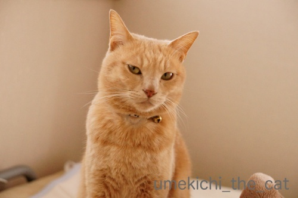
毛布を剥ぎ取られてやさぐれるねこ(*>艸<)
自分が起こされるのは気に入らないですかw
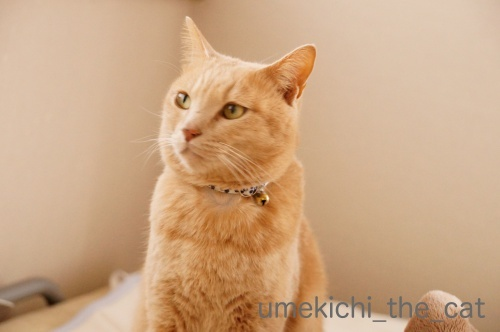
ものすごく面白くなさそうです(≧▽≦)
ぷんすかって言葉がぴったり？

もそもそと目やにをつけたまま（笑）寝室を出て向かったのは
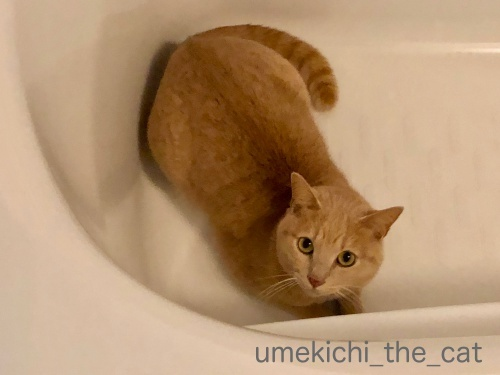
バスタブ。
お目目キラキラで遊ぶ気満々です (=ΦwΦ=)
バスタブに入っているところを物陰からのぞかれたり
のぞいている人間に飛びつくのが楽しくてしょうがないんですよ。
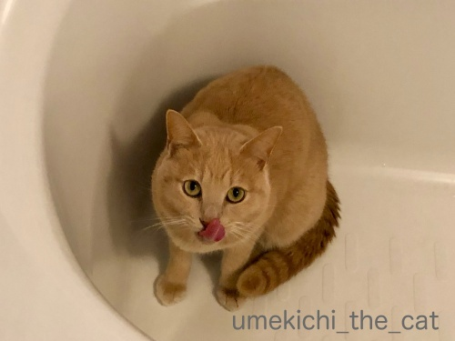
３歩あるいたらご機嫌が直っちゃうところが梅吉の良いところだよねー0(≧▽≦)0
梅吉のあごニキビ。
ニキビの黒いぶつぶつはたくさんあるんですが（毛穴の汚れみたいに見えます）
前回記事のようにかさぶたになってはいません。
消毒もぽんぽんぽんを守って気にしすぎないようにしています。
悪化しちゃう子はあごが腫れ上がる、とも聞きますが
梅吉の場合は今の所大丈夫なようです＾＾
そのかさぶたは一体なんだ！？ [梅吉]
先日お風呂に入って蒸しタオルで梅吉の顔を拭いていたらあごに何かが・・・
（指差しているのはボーカロイドキャラに扮したちぃさんです(⌒-⌒;）
これです。
夕方ブラシをした時には無かったのに・・・
このまるいボコッとした穴。
私が思い当たったのは真菌かあごニキビ。
真菌だったら大ごとです。
翌日病院へ。
待合室でお怒りの梅吉さん。

びょういんは らいげつの はずやんかー！
念の為猫ベッドに落ちていた剥がれたカサブタも持って行きました。
あごを丹念に診察されて・・・・・

本にゃんはさっさとキャリーに戻りますw
診察結果は「あごニキビ」でした。
猫のあごニキビは、食事後口の周りについた食べかす等が引き起こすなどと言われていますが
（原因は諸説あってはっきりとはわかっていないようですよ。）
梅吉の場合は中性脂肪値の高い体質ゆえ出来やすいようです。
治療は患部を消毒するくらいしかないとのこと。
消毒もやりすぎると皮膚を傷つけて余計に悪化させてしまうかもしれないので
1日一回消毒液をつけたコットンで「ぽんぽんぽん」で十分だと。
梅吉の場合は中性脂肪値がもう少し低くなればあごニキビも自然に治るかな？
とのことでした。
ちょっと気の長い治療になりそうですが日常生活で注意することは無し、
と言われたのでホッ＾＾
真菌だったら（水虫みたいなものです）人間に感染る可能性もあるし
家中を消毒しなければいけないし一緒にお風呂なんてもってのほかです。
家に帰ってきてご飯を食べておかーさんのお膝で腑抜け顔(≧▽≦)
お風呂、一緒に入っても大丈夫だって。
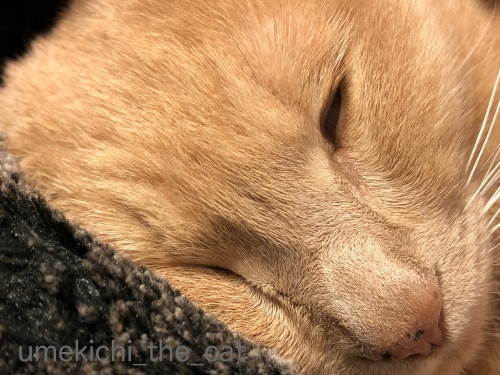
そのぶちゃいくな寝顔がいいねー！
ちなみに寒い時期は菌の働きが弱くなるので真菌感染はほとんど無いそうです。
↑ガブッと一押し↑
（指差しているのはボーカロイドキャラに扮したちぃさんです(⌒-⌒;）
これです。
夕方ブラシをした時には無かったのに・・・
このまるいボコッとした穴。
私が思い当たったのは真菌かあごニキビ。
真菌だったら大ごとです。
翌日病院へ。
待合室でお怒りの梅吉さん。

念の為猫ベッドに落ちていた剥がれたカサブタも持って行きました。
あごを丹念に診察されて・・・・・

本にゃんはさっさとキャリーに戻りますw
診察結果は「あごニキビ」でした。
猫のあごニキビは、食事後口の周りについた食べかす等が引き起こすなどと言われていますが
（原因は諸説あってはっきりとはわかっていないようですよ。）
梅吉の場合は中性脂肪値の高い体質ゆえ出来やすいようです。
治療は患部を消毒するくらいしかないとのこと。
消毒もやりすぎると皮膚を傷つけて余計に悪化させてしまうかもしれないので
1日一回消毒液をつけたコットンで「ぽんぽんぽん」で十分だと。
梅吉の場合は中性脂肪値がもう少し低くなればあごニキビも自然に治るかな？
とのことでした。
ちょっと気の長い治療になりそうですが日常生活で注意することは無し、
と言われたのでホッ＾＾
真菌だったら（水虫みたいなものです）人間に感染る可能性もあるし
家中を消毒しなければいけないし一緒にお風呂なんてもってのほかです。
家に帰ってきてご飯を食べておかーさんのお膝で腑抜け顔(≧▽≦)
お風呂、一緒に入っても大丈夫だって。
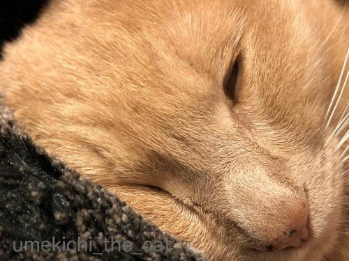
そのぶちゃいくな寝顔がいいねー！
ちなみに寒い時期は菌の働きが弱くなるので真菌感染はほとんど無いそうです。
梅吉のバスタイム [梅吉]
（今日の写真はお風呂用防水カメラで撮影したので画像が荒いです。）
お風呂に入るとまず梅吉専用タオルに乗って

セルフグルーミング。あちがぴ〜ん！

開脚v

一通り終了したら蒸しタオルでお顔とお耳、体を拭かせていただきますm(_ _)m

気持ち良いですか？

最後はお鼻ほじほじ！時々大物が取れてきますよ(*>艸<)
（あくび編 28秒です）
緩みっぱなしでひどい顔でしょー！
この顔見るのが1日の終わりの楽しみであります。
（白目編 24秒です）
白目で恍惚の表情。うめきちったら。
梅吉はお風呂大好き。
昨年秋頃からはおとーさん、おかーさんされぞれのバスタイムに付き合って
1日２回、連湯 （れんとう）しておりますw
↑ガブッと一押し↑
お風呂に入るとまず梅吉専用タオルに乗って

セルフグルーミング。あちがぴ〜ん！

開脚v

一通り終了したら蒸しタオルでお顔とお耳、体を拭かせていただきますm(_ _)m

気持ち良いですか？

最後はお鼻ほじほじ！時々大物が取れてきますよ(*>艸<)
（あくび編 28秒です）
緩みっぱなしでひどい顔でしょー！
この顔見るのが1日の終わりの楽しみであります。
（白目編 24秒です）
白目で恍惚の表情。うめきちったら。
梅吉はお風呂大好き。
昨年秋頃からはおとーさん、おかーさんされぞれのバスタイムに付き合って
1日２回、連湯 （れんとう）しておりますw
にゃんこは目を開けて寝る！？ [梅吉]
押入れの空きスペースに寝ている梅吉を激写！
眠っているのかな？と正面の方に回り込むと
目は開いてました。そしてすごく迷惑そうな顔をされる(-_-メ)
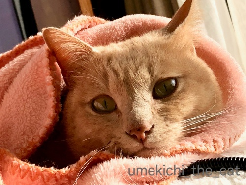
ぬくぬく時はご機嫌です。
お目目もキュルンとしていますよ＾＾
熟睡時はちゃんと目を閉じてますが
こんな風に目を開けたまま寝ている（？）ことも良くあります。
よく見るとちょっと怖いw
こういう時は目の前に指を出したりしても目で追いません。
何も見えていない、感じです。
みなさんのおうちのニャンコはこんな風に寝ていることはありますか？
風邪は一番悪い時期は脱したようです。今回は咳も出なくて助かりました。
まだ鼻声ですが食欲もあって極めて元気です＾＾
12日は無事健康診断も終わったので自分に甘いものご褒美〜♪
去年検査も検査後も辛かったバリウム検査は今回避けました。
近々どこかで胃カメラをしてもらおうと思ってます。
麻酔下でなら口からでも鼻からでも全然平気なのでーす。
↑ガブッと一押し↑
眠っているのかな？と正面の方に回り込むと
目は開いてました。そしてすごく迷惑そうな顔をされる(-_-メ)
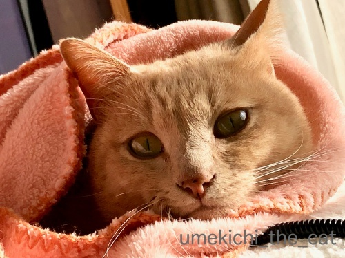
ぬくぬく時はご機嫌です。
お目目もキュルンとしていますよ＾＾
熟睡時はちゃんと目を閉じてますが
こんな風に目を開けたまま寝ている（？）ことも良くあります。
よく見るとちょっと怖いw
こういう時は目の前に指を出したりしても目で追いません。
何も見えていない、感じです。
みなさんのおうちのニャンコはこんな風に寝ていることはありますか？
風邪は一番悪い時期は脱したようです。今回は咳も出なくて助かりました。
まだ鼻声ですが食欲もあって極めて元気です＾＾
12日は無事健康診断も終わったので自分に甘いものご褒美〜♪
去年検査も検査後も辛かったバリウム検査は今回避けました。
近々どこかで胃カメラをしてもらおうと思ってます。
麻酔下でなら口からでも鼻からでも全然平気なのでーす。
夕ご飯前はつるつる、ほりほり [梅吉]
ベランダのプランターに植えた芽キャベツ。記事を調べると植えたのは昨年8月下旬。
途中経過の記事が昨年末12月下旬。
超スローペースで成長を続けやっとこのくらいの大きさに。

所々欠けているのは間引いた跡。
これ以上待っても硬くなりそうだし早く食べてみたいので（笑）収穫しました。
芽キャベツはこんな風に生るのをご存知でしたか？

大きさ比較のためによくあるリップクリームを置いてみました。
小さいでしょ(*>艸<)
一番大きいのは（これでスーパーに売っているくらいの大きさ）
茎に生ったものではなく薹の部分です。
あら＾＾梅吉さんが来てくれるなら比較のリップクリームは要らなかったかしらw
においが気になるのか真剣にふんふんしておりました。
芽キャベツはオリーブオイルでさっと炒めたり、シチューなどスープに入れることが多いのですが
この日は軽く茹でてマヨネーズをつけて食べました。
固くなかった！柔らかくて甘みもあって美味しかったですよー。
今年もまた植える予定。今度はもう少し大きく成長するといいな。
さて、最近梅吉に変なクセが・・・
（10秒です。鈴の音とかしゃかしゃ音が入ってます）
梅吉の夕ご飯を用意しているとシンクをつるつる、ほりほり・・・
必ずやるんですよね〜。そしてこの時間のみ。何だろうこの行動はw
このせいでキッチンを使った後はきれいに掃除して
（梅吉に変な菌が付いたりしないよう）熱湯で消毒しておいたりとっても面倒。
止めて欲しいのですが本にゃんは聞く耳持ってくれません(-_-メ)
みなさんのおうちのにゃんこわんこ＆ご家族（笑）
止めて欲しい変な癖や習性ってありますかwww
↑ガブッと一押し↑
途中経過の記事が昨年末12月下旬。
超スローペースで成長を続けやっとこのくらいの大きさに。

所々欠けているのは間引いた跡。
これ以上待っても硬くなりそうだし早く食べてみたいので（笑）収穫しました。
芽キャベツはこんな風に生るのをご存知でしたか？

大きさ比較のためによくあるリップクリームを置いてみました。
小さいでしょ(*>艸<)
一番大きいのは（これでスーパーに売っているくらいの大きさ）
茎に生ったものではなく薹の部分です。
あら＾＾梅吉さんが来てくれるなら比較のリップクリームは要らなかったかしらw
においが気になるのか真剣にふんふんしておりました。
芽キャベツはオリーブオイルでさっと炒めたり、シチューなどスープに入れることが多いのですが
この日は軽く茹でてマヨネーズをつけて食べました。
固くなかった！柔らかくて甘みもあって美味しかったですよー。
今年もまた植える予定。今度はもう少し大きく成長するといいな。
さて、最近梅吉に変なクセが・・・
（10秒です。鈴の音とかしゃかしゃ音が入ってます）
梅吉の夕ご飯を用意しているとシンクをつるつる、ほりほり・・・
必ずやるんですよね〜。そしてこの時間のみ。何だろうこの行動はw
このせいでキッチンを使った後はきれいに掃除して
（梅吉に変な菌が付いたりしないよう）熱湯で消毒しておいたりとっても面倒。
止めて欲しいのですが本にゃんは聞く耳持ってくれません(-_-メ)
みなさんのおうちのにゃんこわんこ＆ご家族（笑）
止めて欲しい変な癖や習性ってありますかwww

カフェオレ色の梅吉

梅吉 2023年8月10日 永眠


梅吉と出会った譲渡会

犬猫の理由なき殺処分ゼロ
妄想広告
UMEKICHI 光

爆発的に早い！
時々攻撃的！
Thanks to Mr.Boss365
爆発的に早い！
時々攻撃的！
Thanks to Mr.Boss365